Artikel HTML
1. Pengertian
HTML adalah singkatan dari HyperText Markup Language. HTML merupakan bahasa markup yang dijadikan sebagai standar dalam pembuatan halaman web. Dengan HTML kita dapat membuat halaman web yang tersusun sebagai blok menggunakan elemen-elemen HTML seperti tag dan atribut.
Menurut Wikipedia Indonesia, Hyper Text Markup Language (HTML) adalah sebuah bahasa markah yang digunakan untuk membuat sebuah halaman web, menampilkan berbagai informasi di dalam sebuah penjelajah web Internet dan pemformatan hiperteks sederhana yang ditulis dalam berkas format ASCII agar dapat menghasilkan tampilan wujud yang terintegrasi. Dengan kata lain, berkasi yang dibuat dalam perangkat lunak pengolah kata dan disimpan dalam format ASCII normal sehingga menjadi halaman web dengan perintah-perintah HTML.
Dokumen HTML mengandung perintah-perintah teks yang disebut tag untuk menampilkan tulisan, gambar, warna, suara, video, animasi, serta link yang menghubungkan dengan berbagai topik. Dengan bentuk Hypertext maka halaman internet akan dapat dibagun dengan cepat serta ditampilkan dengan cantik. Dalam konsep hypertext ini, pembacaan suatu dokumen tidak harus urut namun bisa meloncat antar topik bahkan diprint maupun dicopy di media penyimpanan lokal (hardisk). Format hypertext juga memungkinkan pemakai mesin yang hanya bisa mengenali teks untuk mengakses dokumen dalam bentuk teks saja. Perbedaannya terletak pada tidak ditampilkannya gambar, grafik, animasi, video, suara, dan warna.
2. Struktur HTML
Sebuah halaman HTML memiliki ekstensi file .html. Dalam sebuah dokumen HTML terdiri dari blok-blok elemen HTML. Sebuah elemen HTML terdiri dari tag dan atribut HTML. Tag adalah individu dari struktur html, kita harus membuka dan menutup tag dengan garis miring. Ada beberapa variasi dengan tag beberapa diantaranya adalah tag self-closing yang tidak perlu ditutup dan ada juga tag kosong yang bisa kita tambahkan atribut apa saja di dalamnya. Atribut adalah properti tambahan dari tag html yang mendefinisikan properti dari setiap tag html seperti width, height, control, loop, input, dan autoplay. Atribut ini juga membantu menyimpan informasi dalam meta tag dengan menggunakan atribut name, content, dan type attributes.
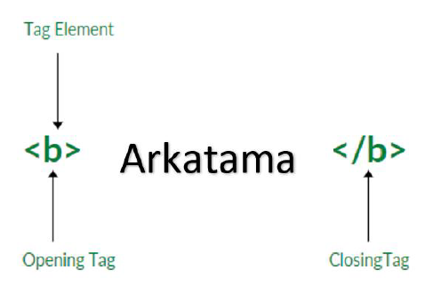Secara lengkap sebuah dokumen HTML memiliki struktur sebagai berikut:
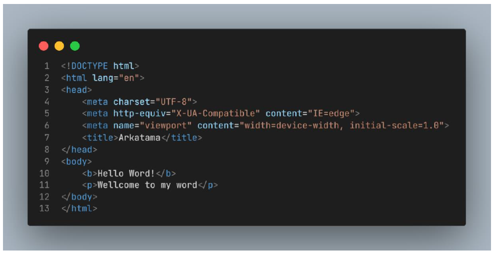3. Tag
3.1 Tag Dasar HTML
- Heading
- Paragraf
- Line Breaking
Heading merupakan tag yang digunakan untuk membungkus kalimat yang menjadi judul atau sub judul dalam dokumen HTML, dengan berbagai ukuran yang berbeda. Pada dasarnya untuk menyatakan suatu Heading, digunakan tag
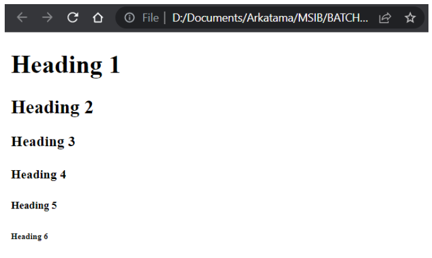
Sebuah paragraf selalu dimulai dari baris baru dan di browser akan otomatis menambahkan jarak atas dan bawah antara paragraf.
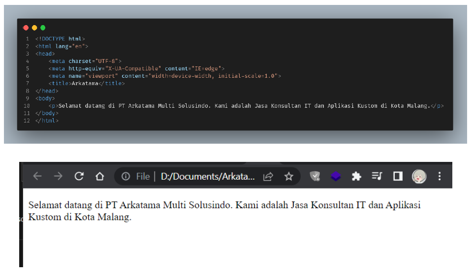Jika kita biasa menggunakan tombol Enter untuk ganti baris, maka hal itu tidak berlaku dalam penulisan dokumen HTML. Seberapa banyak kita memencet tombol Enter, maka tidak akan dianggap sebagai enter. Dalam HTML tag line break dapat digunakan untuk membuat baris baru layaknya fungsi tombol enter pada keyboard.
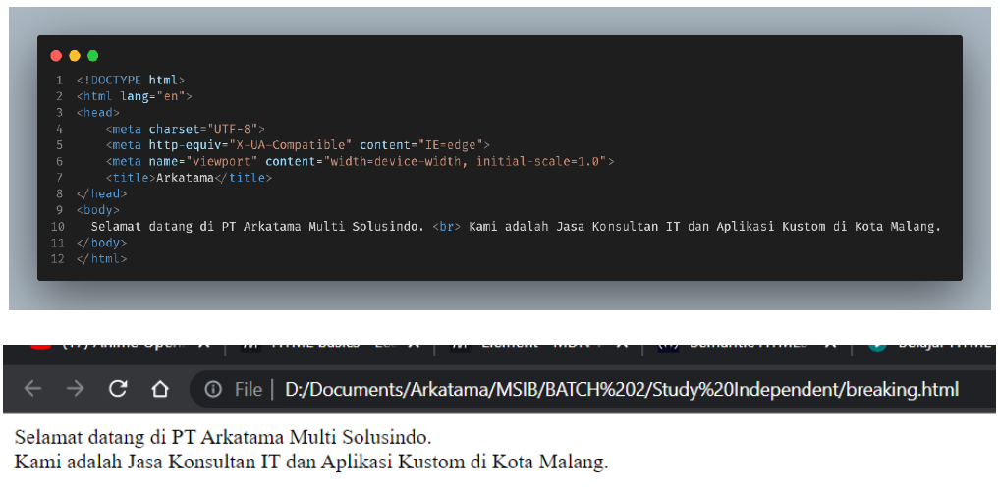3.2 Text Formatting
Jika kita akan membuat sebuah website, dapat dipastikan kita juga kan menyajikan informasi-informasi yang diperlukan. HTML juga mendefinisikan elemen khusus, untuk mendefinisikan teks dengan makna khusus. HTML menggunakan unsur-unsur seperti dan untuk memformat output, seperti teks tebal atau miring.
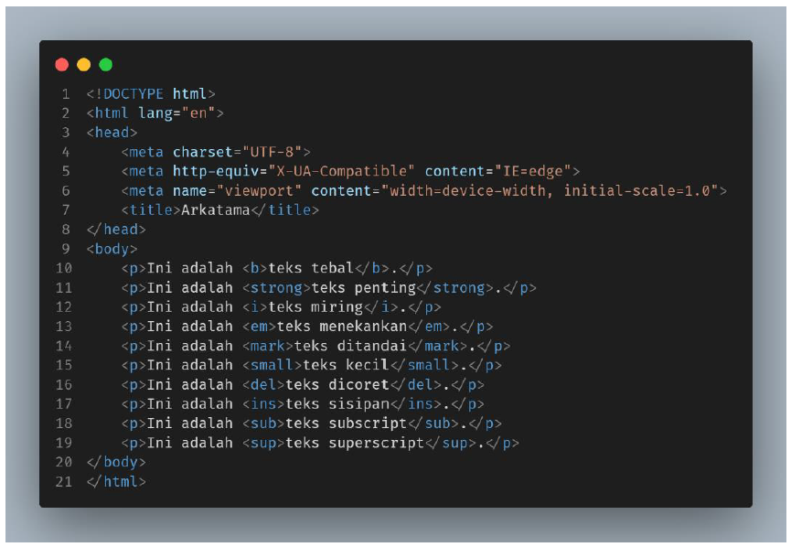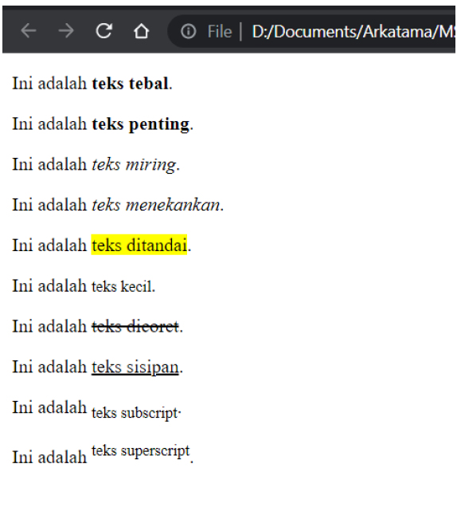
Berikut merupakan contoh text formatting:
Ini adalah teks tebal.
Ini adalah teks penting.
Ini adalah teks miring.
Ini adalah teks menekankan.
Ini adalah teks ditandai.
Ini adalah teks kecil.
Ini adalah teks dicoret.
Ini adalah teks sisipan.
Ini adalah teks subscript.
Ini adalah teks superscript.
3.3 List
List/ daftar merupakan bentuk umum yang biasa kita gunakan untuk menampilkan daftar dengan urutan tertentu. Dalam HTML, dikenal dua istilah list : ordered list dan unordered list.
- Ordered List (daftar berurutan)
- Sukarno (1945-1967)
- Soeharto (1967-1998)
- Bacharuddin Jusuf Habibie (1998-1999)
- Abdurrahman Wahid (1999-2001)
- Megawati Soekarnoputri (2001-2004)
- Susilo Bambang Yudhoyono (2004-2009; 2009-2014)
- Joko Widodo (2014-2019)
- Unordered List (daftar tidak berurutan)
- Nanggroe Aceh Darussalam (Ibu Kota Banda Aceh)
- Sumatera Utara (Ibu Kota Medan)
- Sumatera Selatan (Ibu Kota Palembang)
- Sumatera Barat (Ibu Kota Padang)
- Bengkulu (Ibu Kota Bengkulu)
- Riau (Ibu Kota Pekanbaru)
- Kepulauan Riau (Ibu Kota Tanjung Pinang)
- Jambi (Ibu Kota Jambi)
- Lampung (Ibu Kota Bandar Lampung)
- Bangka Belitung (Ibu Kota Pangkal Pinang)
- Kalimantan Barat (Ibu Kota Pontianak))
- Kalimantan Timur (Ibu Kota Samarinda)
- Kalimantan Selatan (Ibu Kota Banjarbaru)
- Kalimantan Tengah (Ibu Kota Palangkaraya)
- Kalimantan Utara (Ibu Kota Tanjung Selor)
- Banten (Ibu Kota Serang)
- DKI Jakarta (Ibu Kota Jakarta)
- Jawa Barat (Ibu Kota Bandung)
- Jawa Tengah (Ibu Kota Semarang)
- Daerah Istimewa Yogyakarta (Ibu Kota Yogyakarta)
- Jawa Timur (Ibu Kota Surabaya)
- Bali (Ibu Kota Denpasar)
- Nusa Tenggara Timur (Ibu Kota Kupang)
- Nusa Tenggara Barat (Ibu Kota Mataram)
- Gorontalo (Ibu Kota Gorontalo)
- Sulawesi Barat (Ibu Kota Mamuju)
- Sulawesi Tengah (Ibu Kota Palu)
- Sulawesi Utara (Ibu Kota Manado)
- Sulawesi Tenggara (Ibu Kota Kendari)
- Sulawesi Selatan (Ibu Kota Makassar))
- Maluku Utara (Ibu Kota Sofifi)
- Maluku (Ibu Kota Ambon)
- Papua Barat (Ibu Kota Manokwari)
- Papua (Ibu Kota Jayapura)
- Papua Tengah (Ibu Kota Nabire)
- Papua Pegunungan (Ibu Kota Jayawijaya)
- Papua Selatan (Ibu Kota Merauke)
- Papua Barat Daya (Ibu Kota Sorong)
Ordered list adalah suatu metode mengurutkan daftar dengan menggunakan angka, abjad dan angka romawi pada HTML.
Contoh Ordered List:
Nama Presiden Indonesia:
Unordered list adalah metode mengurutkan daftar dengan menggunakan symbol atau karakter spesial pada HTML. Nama lain dari unordered list sendiri adalah bullet list. Bullet atau onordered list ini umumnya digunakan apabila kita ingin membuat suatu daftar yang terlepas dari suatu urutan-urutan tertentu.
Contoh Unordered List:
Nama Provinsi di Indonesia:
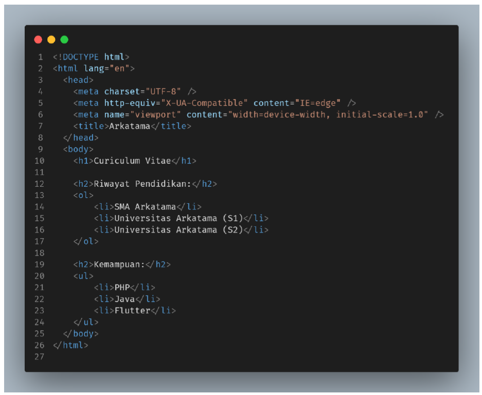
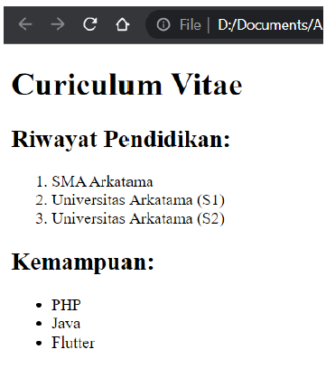
3.4 Tautan/ Link/ Hyperlink
Link atau hyperlink merupakan komponen utama dari HTML yang digunakan untuk menghubungkan antar elemen atau antar halaman. Link bisa diletakkan pada teks maupun gambar. Tag link memiliki ciri khusus akan merubah tag child-nya menjadi berwarna biru dan memiliki garis bawah jika digunakan untuk membungkus elemen teks. Umumnya tag link tidak bisa dipisahkan dari atribut berikut:
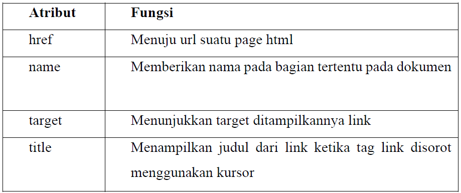3.5 Gambar
Secara teknis gambar tidak dimasukkan ke dalam sebuah halaman web, tetapi ditautkan ke dalam halaman web. Tag menyimpan referensi dari URL/ lokasi file gambar. Atribut src (source) untuk menentukan URL/ lokasi gambar. Atribut alt (alternative) digunakan untuk menampilkan text label jika gambar gagal dimuat di halaman web.
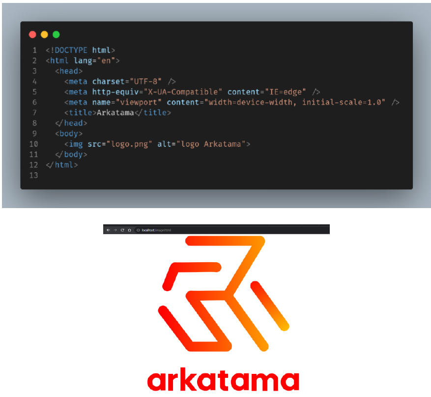